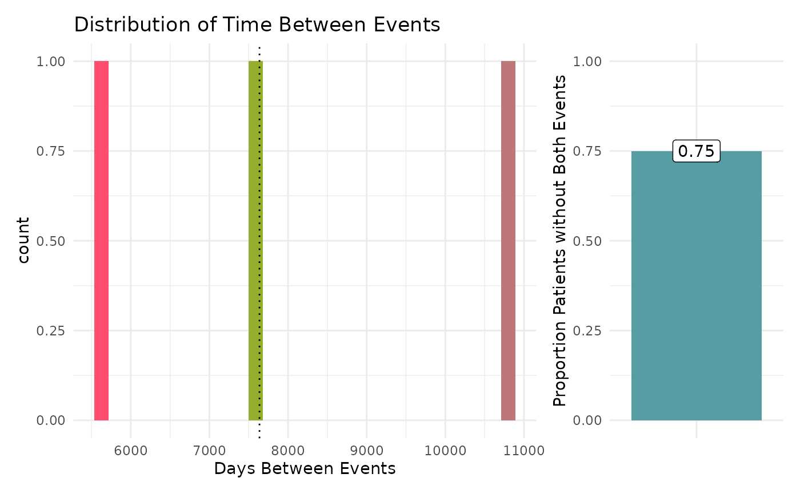
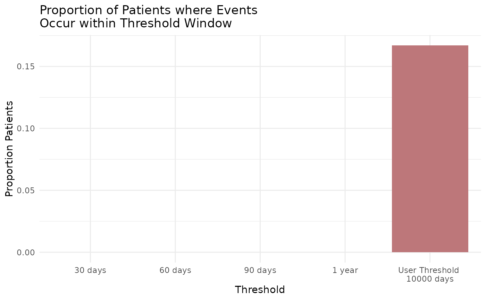

Using the tabular output generated by pes_process, this function will build a graph to
visualize the results. Each function configuration will output a bespoke ggplot. Theming can
be adjusted by the user after the graph has been output using + theme(). Most graphs can
also be made interactive using make_interactive_squba()
Arguments
- process_output
tabular input || required
The tabular output produced by
pes_processNote any patient-level results generated are not intended to be used with this function.
- large_n
boolean || defaults to
FALSEFor Multi-Site analyses, a boolean indicating whether the large N visualization, intended for a high volume of sites, should be used. This visualization will produce high level summaries across all sites, with an option to add specific site comparators via the
large_n_sitesparameter.- large_n_sites
vector || defaults to
NULLWhen
large_n = TRUE, a vector of site names that can add site-level information to the plot for comparison across the high level summary information.
Value
This function will produce a graph to visualize the results
from pes_process based on the parameters provided. The default
output is typically a static ggplot or gt object, but interactive
elements can be activated by passing the plot through make_interactive_squba.
For a more detailed description of output specific to each check type,
see the PEDSpace metadata repository
Examples
#' Source setup file
source(system.file('setup.R', package = 'patienteventsequencing'))
#' Create in-memory RSQLite database using data in extdata directory
conn <- mk_testdb_omop()
#' Establish connection to database and generate internal configurations
initialize_dq_session(session_name = 'pes_process_test',
working_directory = my_directory,
db_conn = conn,
is_json = FALSE,
file_subdirectory = my_file_folder,
cdm_schema = NA)
#> Connected to: :memory:@NA
#' Build mock study cohort
cohort <- cdm_tbl('person') %>% dplyr::distinct(person_id) %>%
dplyr::mutate(start_date = as.Date(-5000), # RSQLite does not store date objects,
# hence the numerics
end_date = as.Date(15000),
site = ifelse(person_id %in% c(1:6), 'synth1', 'synth2'))
#' Build function input table
pes_events <- tidyr::tibble(event = c('a', 'b'),
event_label = c('hypertension', 'inpatient/ED visit'),
domain_tbl = c('condition_occurrence', 'visit_occurrence'),
concept_field = c('condition_concept_id', 'visit_concept_id'),
date_field = c('condition_start_date', 'visit_start_date'),
vocabulary_field = c(NA, NA),
codeset_name = c('dx_hypertension', 'visit_edip'),
filter_logic = c(NA, NA))
#' Execute `pes_process` function
#' This example will use the single site, exploratory, cross sectional
#' configuration
pes_process_example <- pes_process(cohort = cohort,
multi_or_single_site = 'single',
anomaly_or_exploratory = 'exploratory',
time = FALSE,
omop_or_pcornet = 'omop',
user_cutoff = 10000,
n_event_a = 1,
n_event_b = 2,
pes_event_file = pes_events) %>%
suppressMessages()
#> ┌ Output Function Details ──────────────────────────────────────┐
#> │ You can optionally use this dataframe in the accompanying │
#> │ `pes_output` function. Here are the parameters you will need: │
#> │ │
#> │ Always Required: process_output │
#> │ │
#> │ See ?pes_output for more details. │
#> └───────────────────────────────────────────────────────────────┘
pes_process_example
#> # A tibble: 3 × 9
#> site num_days user_cutoff event_a_name event_b_name pt_ct total_pts
#> <chr> <dbl> <dbl> <chr> <chr> <int> <int>
#> 1 combined 5628 10000 hypertension inpatient/ED visit 1 12
#> 2 combined 7637 10000 hypertension inpatient/ED visit 1 12
#> 3 combined 10800 10000 hypertension inpatient/ED visit 1 12
#> # ℹ 2 more variables: pts_without_both <int>, output_function <chr>
#' Execute `pes_output` function
pes_output_example <- pes_output(process_output = pes_process_example)
pes_output_example[[1]]
#> `stat_bin()` using `bins = 30`. Pick better value `binwidth`.

pes_output_example[[2]]

#' Easily convert the graph into an interactive ggiraph or plotly object with
#' `make_interactive_squba()`
make_interactive_squba(pes_output_example[[2]])